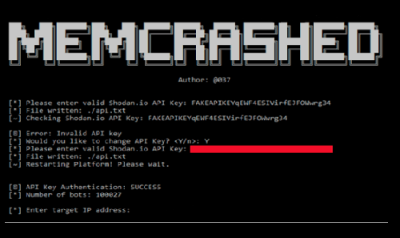

07 Março 2018

Memcached DDoS Attack PoC Code - 17,000 IP endereços publicados on-line
Nos últimos dias, os hackers usaram servidores Memcached vulneráveis para ataques DDoS, incluindo o ataque maciço no site Github e o maior ataque mundial de 1.7 Tbps já registrado
Os dois primeiros códigos foram publicados em 5 de março de 2017. O primeiro código está escrito em linguagem C e utiliza a lista de 17.000 servidores Memcached vulneráveis para realizar ataques DDoS enquanto a segunda ferramenta DDoS está escrita em python e a pessoa por trás da criação deste A ferramenta passa pelo identificador do @ 37 no Twitter. A ferramenta DDoS usa o mecanismo de busca Shodan para gerar uma lista exclusiva de servidores Memcached vulneráveis para enviar pacotes UDP forjados.
A vulnerabilidade nos servidores Memcached existe porque a implementação do protocolo UDP dos seus servidores é imperfeita e qualquer um pode iniciar um grande ataque de negação de serviço distribuído (DD0S) sem muita dúvida.
Isso significa que os cibercriminosos conseguiram adicionar uma técnica nova e extremamente eficaz ao seu ciber-armamento já carregado que pode duplique os ataques DDoS em até 51 x 200x através da exploração de servidores Memcached mal configurados, que são facilmente acessíveis através da conexão pública à Internet.
Os servidores Memcached são caches de memória baseados na web que são bastante amplos e são usados para aumentar a capacidade de resposta de sites baseados em banco de dados, pois podem melhorar seu sistema de cache de memória. Esses servidores armazenam em cache os dados que são mais freqüentemente recuperados e armazenados em sua memória em vez de recuperá-lo do disco rígido novamente e novamente. Os servidores Memcache são uma combinação de software de código aberto, bem como hardware de servidor padrão e apenas contém grandes reservas de memória.
Os pesquisadores chamam de um ataque de amplificação que também foi explicado pela Cloudflare na semana passada em sua postagem no blog. "Ao longo dos últimos dias, vimos um grande aumento em um obscuro vetor de ataque de amplificação - usando o protocolo Memcached, vindo da porta UDP 11211. Infelizmente, há muitas implementações Memcached em todo o mundo que foram implantadas usando a configuração insegura padrão ".
Além disso, se os atacantes conseguem preparar bem o ataque de amplificação, eles podem iniciar um ataque com capacidade de falsificação de IP mais baixa possível. A falsificação de endereços IP permite que as respostas do Memcached sejam direcionadas contra outro endereço, como as usadas para atender o GitHub.com, e enviar mais dados para o destino do que as necessidades devem ser enviadas pela fonte não protegida.
Atualmente, estima-se que 88.000 servidores Memcached mal configurados correm o risco de serem abusados e a maioria desses servidores está localizada na Europa e na América do Norte. Se identificado e explorado por elementos maliciosos, podemos testemunhar uma situação em que os ataques DDoS em larga escala se tornarão uma tendência.
No entanto, a pior notícia para as vítimas é que os atacantes também estão usando servidores Memcached para lançar ataques DDoS com notas de resgate de criptografia Monero (XMR) no próprio tráfego. Alguns dias atrás, pesquisadores de Akamai observaram notas de resgate exigindo 50 XMR de vítimas para parar os ataques. No momento da publicação deste artigo, 50 XMR são cerca de US $ 17.000.
Os pesquisadores aconselham os usuários do servidor Memcached a desativar a porta UDP e aumentar sua segurança usando firewalls.
Nota:
Se você estiver executando um negócio; não se esqueça de calcular o custo e a probabilidade de um ataque DDoS em sua empresa com esta Calculadora de Custos de Downtime DDoS.
Os dois primeiros códigos foram publicados em 5 de março de 2017. O primeiro código está escrito em linguagem C e utiliza a lista de 17.000 servidores Memcached vulneráveis para realizar ataques DDoS enquanto a segunda ferramenta DDoS está escrita em python e a pessoa por trás da criação deste A ferramenta passa pelo identificador do @ 37 no Twitter. A ferramenta DDoS usa o mecanismo de busca Shodan para gerar uma lista exclusiva de servidores Memcached vulneráveis para enviar pacotes UDP forjados.
A vulnerabilidade nos servidores Memcached existe porque a implementação do protocolo UDP dos seus servidores é imperfeita e qualquer um pode iniciar um grande ataque de negação de serviço distribuído (DD0S) sem muita dúvida.
Isso significa que os cibercriminosos conseguiram adicionar uma técnica nova e extremamente eficaz ao seu ciber-armamento já carregado que pode duplique os ataques DDoS em até 51 x 200x através da exploração de servidores Memcached mal configurados, que são facilmente acessíveis através da conexão pública à Internet.
Os servidores Memcached são caches de memória baseados na web que são bastante amplos e são usados para aumentar a capacidade de resposta de sites baseados em banco de dados, pois podem melhorar seu sistema de cache de memória. Esses servidores armazenam em cache os dados que são mais freqüentemente recuperados e armazenados em sua memória em vez de recuperá-lo do disco rígido novamente e novamente. Os servidores Memcache são uma combinação de software de código aberto, bem como hardware de servidor padrão e apenas contém grandes reservas de memória.
Os pesquisadores chamam de um ataque de amplificação que também foi explicado pela Cloudflare na semana passada em sua postagem no blog. "Ao longo dos últimos dias, vimos um grande aumento em um obscuro vetor de ataque de amplificação - usando o protocolo Memcached, vindo da porta UDP 11211. Infelizmente, há muitas implementações Memcached em todo o mundo que foram implantadas usando a configuração insegura padrão ".
Além disso, se os atacantes conseguem preparar bem o ataque de amplificação, eles podem iniciar um ataque com capacidade de falsificação de IP mais baixa possível. A falsificação de endereços IP permite que as respostas do Memcached sejam direcionadas contra outro endereço, como as usadas para atender o GitHub.com, e enviar mais dados para o destino do que as necessidades devem ser enviadas pela fonte não protegida.
Atualmente, estima-se que 88.000 servidores Memcached mal configurados correm o risco de serem abusados e a maioria desses servidores está localizada na Europa e na América do Norte. Se identificado e explorado por elementos maliciosos, podemos testemunhar uma situação em que os ataques DDoS em larga escala se tornarão uma tendência.
No entanto, a pior notícia para as vítimas é que os atacantes também estão usando servidores Memcached para lançar ataques DDoS com notas de resgate de criptografia Monero (XMR) no próprio tráfego. Alguns dias atrás, pesquisadores de Akamai observaram notas de resgate exigindo 50 XMR de vítimas para parar os ataques. No momento da publicação deste artigo, 50 XMR são cerca de US $ 17.000.
Os pesquisadores aconselham os usuários do servidor Memcached a desativar a porta UDP e aumentar sua segurança usando firewalls.
Nota:
Se você estiver executando um negócio; não se esqueça de calcular o custo e a probabilidade de um ataque DDoS em sua empresa com esta Calculadora de Custos de Downtime DDoS.